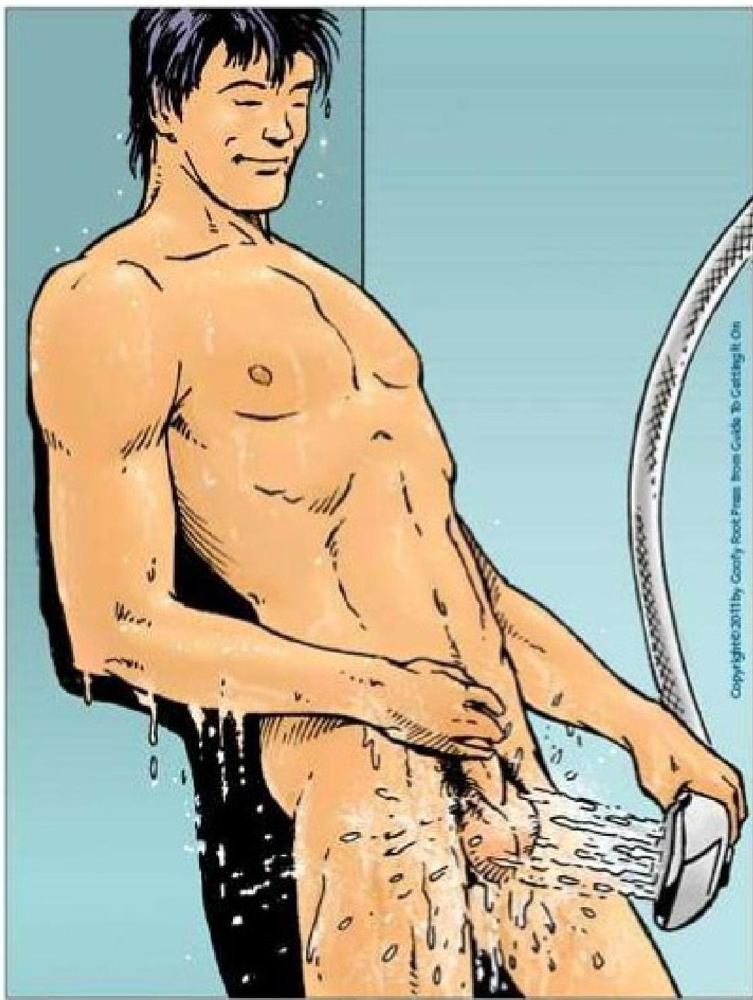
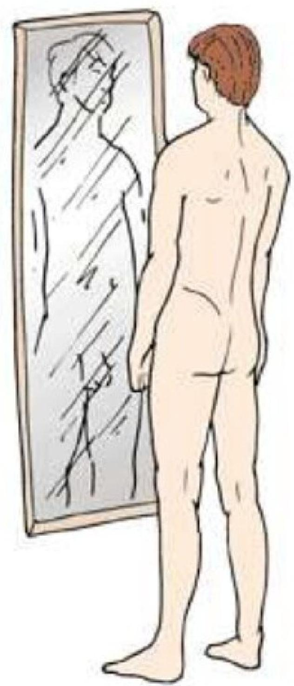
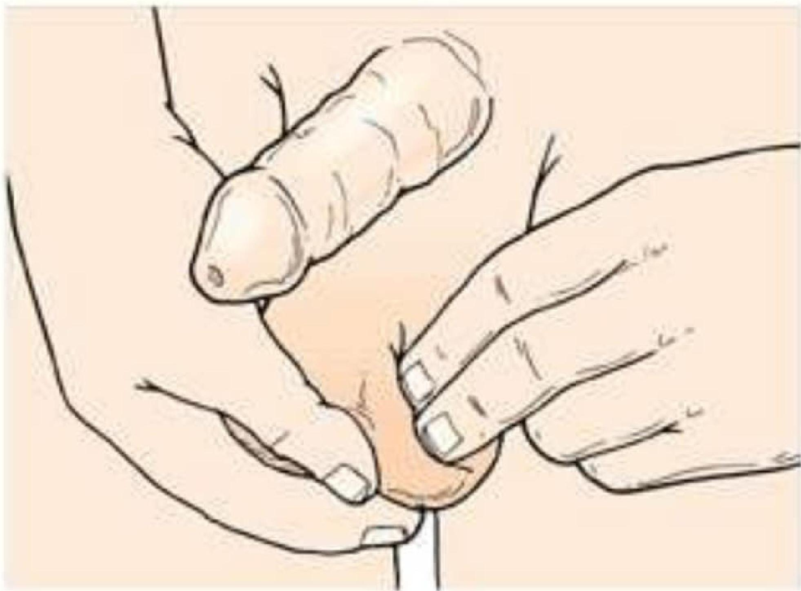
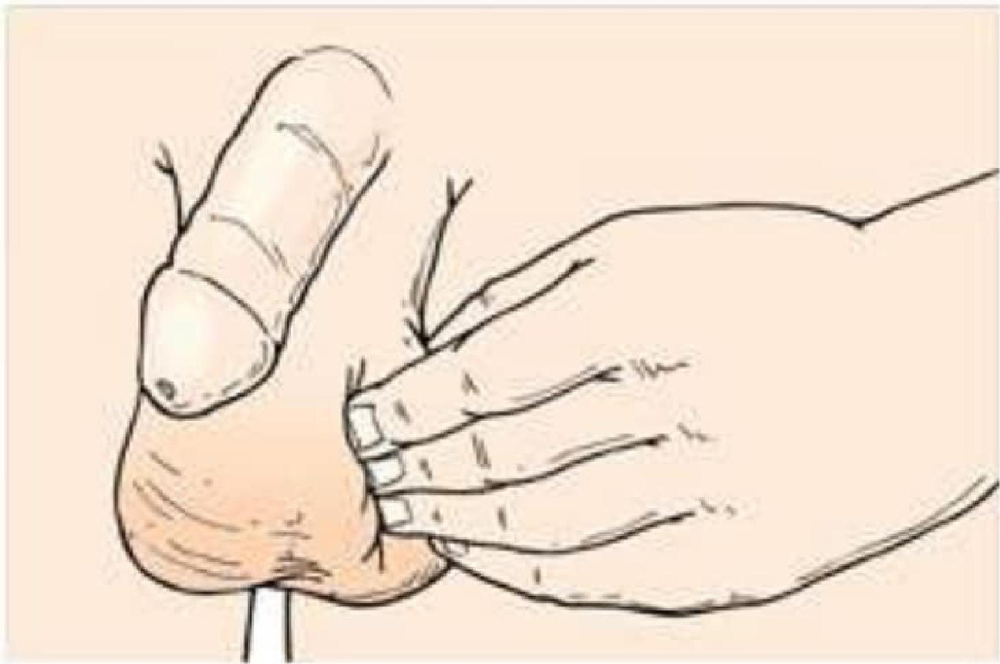
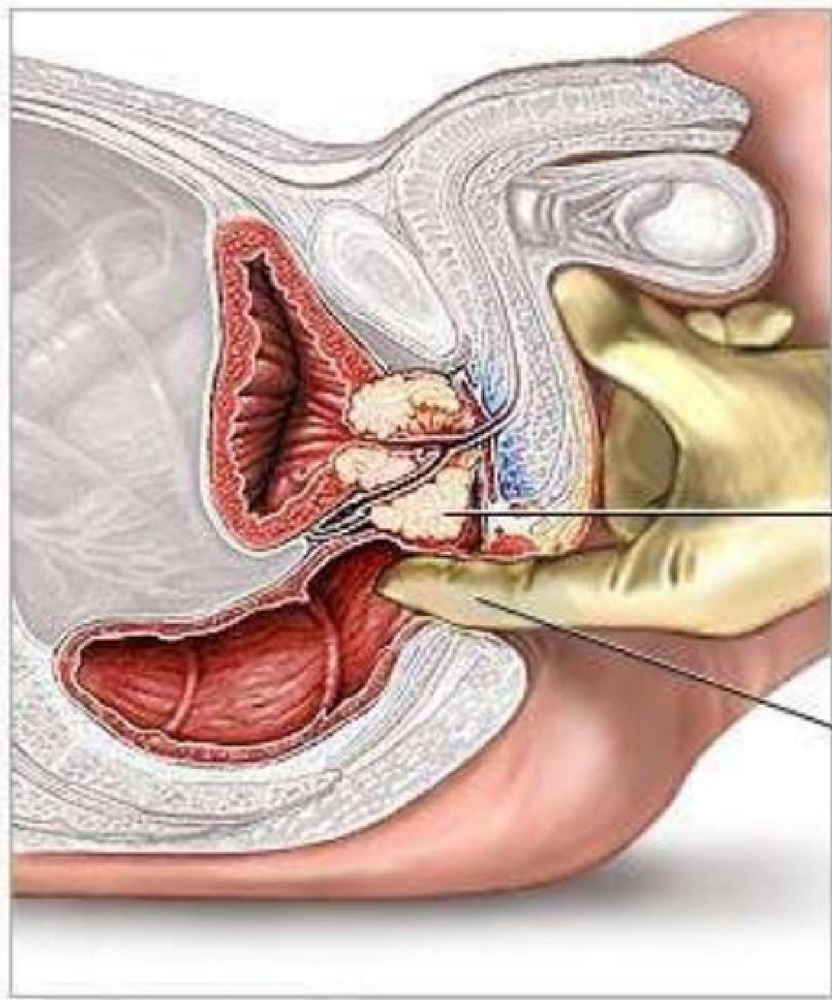
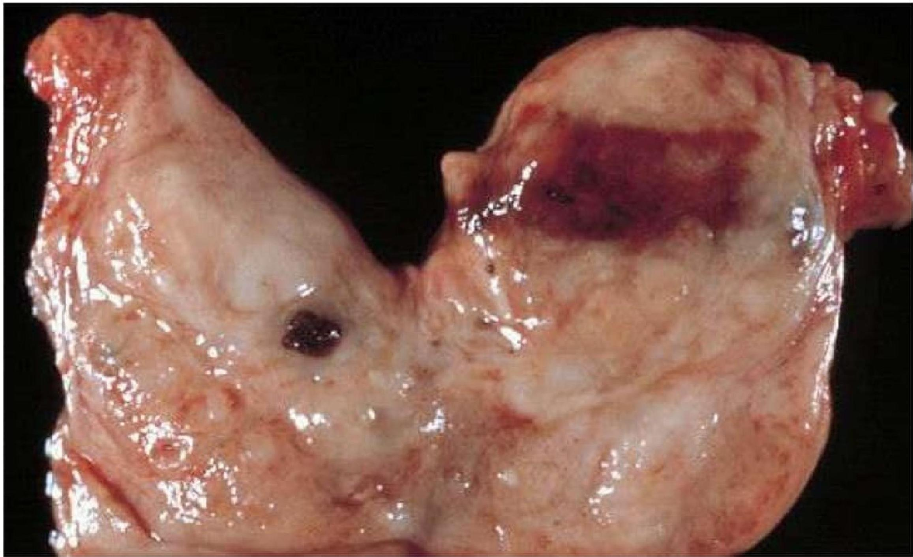

🚹
Topic 07
Male Reproductive Cancers
01
Testicular Cancer
Testicular cancer most often occurs between the ages of 15 and 40. It is a highly treatable cancer if detected early.
- Metastasis: Occurs to the lung, liver, bone, and adrenal glands.
- Prevention: Routine Testicular Examination.
Assessment Findings
- Painless testicular swelling occurs.
- Dragging sensation is evident in the scrotum.
- Palpable lymphadenopathy, abdominal masses, and gynecomastia may indicate metastasis.
- Late signs include back or bone pain and respiratory symptoms.
Testicular Self-Examination (TSE)
Early detection is key. Men should perform a monthly self-examination.




Interventions
- Prepare the client for radiation therapy or unilateral orchiectomy as prescribed.
- Discuss reproduction, sexuality and fertility information and options with the client (sperm banking).
Post-Operative Care
- Monitor for signs of bleeding and wound infection.
- Monitor Intake and output.
- Notify the physician if chills, fever, increasing pain or tenderness at the incision site, or drainage occurs.
- Instruct the client to perform a monthly testicular self-examination on the remaining testicle.
02
Prostate Cancer

This slow-growing cancer of the prostate gland is usually an Androgen dependent type of carcinoma. The risk increases in men with each decade after age 50.
Prostate cancer can spread via direct invasion of surrounding tissues or by metastasis, through the bloodstream and lymphatics, to the bony pelvis and spine. Bone metastasis is a major concern.
Etiology & Risk Factors
- Age (>50)
- Race or ethnicity (Higher risk in African American men)
- Family history
- High-fat diet
- High testosterone levels
- Occupations exposed to harmful chemicals
Assessment

- Often asymptomatic in early stages.
- Hard, pea-sized nodule palpated on rectal examination.
- Hematuria.
- Late symptoms: weight loss, urinary obstruction, and pain radiating from the lumbosacral area down the leg.
Diagnostic Tests
- PSA (Prostate-Specific Antigen): Not necessarily an indicator of malignancy but used routinely to monitor response to therapy.
- Serum Acid Phosphatase: Elevated levels indicate spread and metastasis.
Early Detection
Early detection typically includes an annual digital rectal exam (DRE) starting at age 40.
Interventions
Non-Surgical
- Hormone Manipulation: To decrease androgen levels.
- Radiation Therapy: May be prescribed alone or with surgery (pre-op or post-op) to reduce lesion and limit metastasis.
- Chemotherapy: Used in hormone-resistant tumors.
Surgical
- TURP (Transurethral Resection of the Prostate)
- Suprapubic Prostatectomy
- Retropubic Prostatectomy
- Perineal Prostatectomy
Knowledge Check
Test Your Understanding
Complete this quiz to assess your comprehension of Male Reproductive Cancers.
Loading quiz...